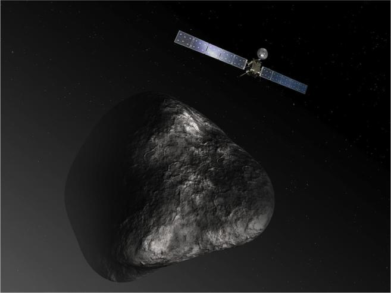
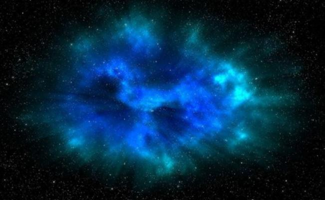

Los nacimientos de agua son como su nombre lo dice lugares de nace el agua pura y nueva.
Hay nacimientos grandes o pequeños, algunos tan grandes que puedan hasta dar agua a mucho lugares.
los nacimientos de agua son muy importantes pues de hay se pueden encontrar otros que se unen y pueden hasta formar :
rios, cascadas, lagos y etc...
El cometa de la misión Rosetta ‘suda’ dos vasos de agua por segundo

Adam Sarafian es uno de estos cazadores, aunque su cargo oficial es el de geoquímico del Instituto Oceanográfico de Woods Hole, en Estados Unidos. Sarafian analizó la composición química de diferentes fuentes de agua de nuestro planeta y encontró deuterio (un isótopo del hidrógeno) en grandes cantidades. Tan grandes que era imposible que la radiación solar las hubiera provocado, lo que le hizo pensar que el agua debía ser anterior a nuestro Sol y que la causa debía ser algún otro evento estelar. Para confirmarlo, se unió a una partida de otros rastreadores de agua, científicos de la Universidad de Washington, y simularon las primeras etapas del Sistema Solar. El resultado fue que, según las temperaturas y las condiciones de radiación de aquel momento, sería imposible que nuestra estrella hubiera generado tanto deuterio. Sarafian estima que entre el 7 y el 50% del agua de nuestro planeta es más vieja que el Sol. “La respuesta a una de las preguntas básicas sobre el universo”, nos señala Sarafian en una entrevista telefónica, “es que nuestros océanos siempre formaron parte del planeta. No surgieron como parte de un proceso posterior, como previamente creíamos”.
Cuando diluvia en una nube interestelar

La mayor sorpresa para los científicos, de todos modos, no es que gran parte del agua de nuestro planeta sea anterior al Sol, sino la enorme cantidad de agua que hay en las nubes interestelares. El observatorio espacial Herschel, por ejemplo, ha detectado en la constelación de Tauro una cantidad de vapor de agua suficiente para llenar 2.000 veces los mares terrestres. Y aun así, esto es apenas una gota. “En una región de formación de estrellas de baja masa”, añade Cernicharo, “puede haber una molécula de agua por cada 10.000 de hidrógeno molecular, que es la más abundante. Si tenemos en cuenta que estas nubes pueden tener un millón de veces la masa del Sol y que este tiene más de 300.000 veces la masa de nuestro planeta, resulta que allí puede haber millones de veces la masa de la Tierra en forma de vapor de agua”. Así, cuanto más tiempo de formación tenga una nube interestelar, más agua tendrá. Y esta es la segunda sorpresa con la que se encontraron los cazadores.